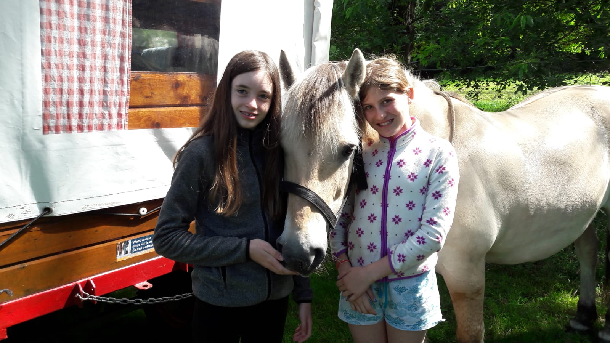

over mijzelf
Ik ben Elena Olga. Ik ben 12 jaar. En heb 2 zusjes. Mara Aurelia en Gaia Issotta.
Samen met mijn ouders wonen wij op Ijburg in Amsterdam.
hobbies
Mijn hobbies zijn paardrijden. 1 keer springen en 1 keer dressuur. Ook heb ik privé zangles

Toen mijn vriendin en haar moeder en mijn moeder en ik op huifkartocht gingen. Daar hebben we op de laatste dag een fotoshoot gedaan.
Ik heb daar met mijn vriendin(links) een foto gemaakt met Odin het paard. Van de verhuurplaats
Thor Heste. Bij Thor Heste huur je een pony met huifkar.
Wij hebben een super weekend gehad! Odin is een fjordpaard. De meeste fjorden zijn pony maat.
Maar oficieel zijn fjorden paarden.
Dingen die ik leuk vind om te doen:
- Paardrijden
- Star stablen
- Minecraften
Top 3 favoriete Pony's op de manege:
- Rico
- Nelis
- Rhona
contact
mijn school email is 24369@edu.msa.nl